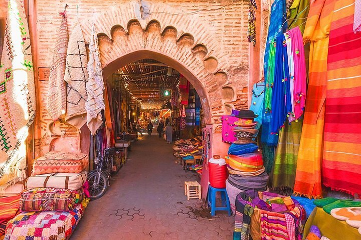
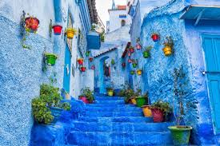

About Morocco
Morocco is a North African country known for its diverse culture, vibrant markets, and stunning landscapes. From the bustling medinas of Marrakech to the serene Sahara Desert, Morocco offers a unique blend of tradition and modernity. The country's rich history is reflected in its architecture, cuisine, and festivals, making it a fascinating destination for travelers.
Top Attractions
- Marrakech Medina
- Sahara Desert
- Chefchaouen

A UNESCO World Heritage site, the medina is a maze of narrow streets filled with shops, palaces, and gardens.

Experience the vastness of the desert with camel treks, sand dunes, and traditional Berber camps.

Known as the "Blue City," Chefchaouen is famous for its blue-painted streets and buildings set against the Rif Mountains.